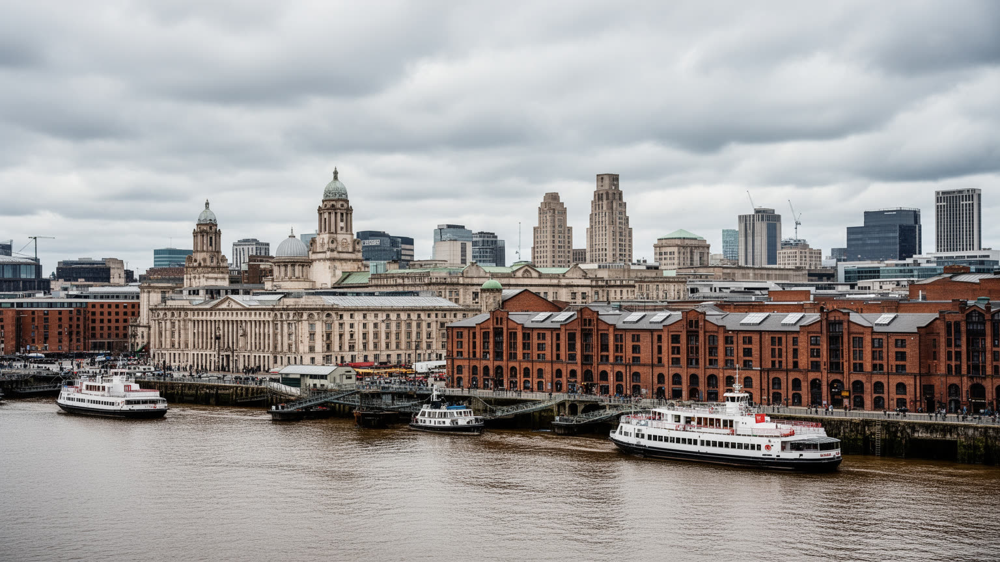
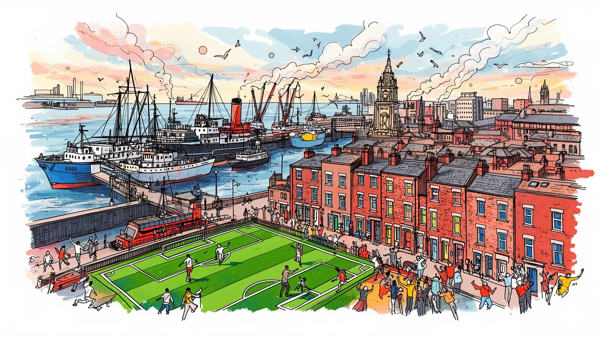
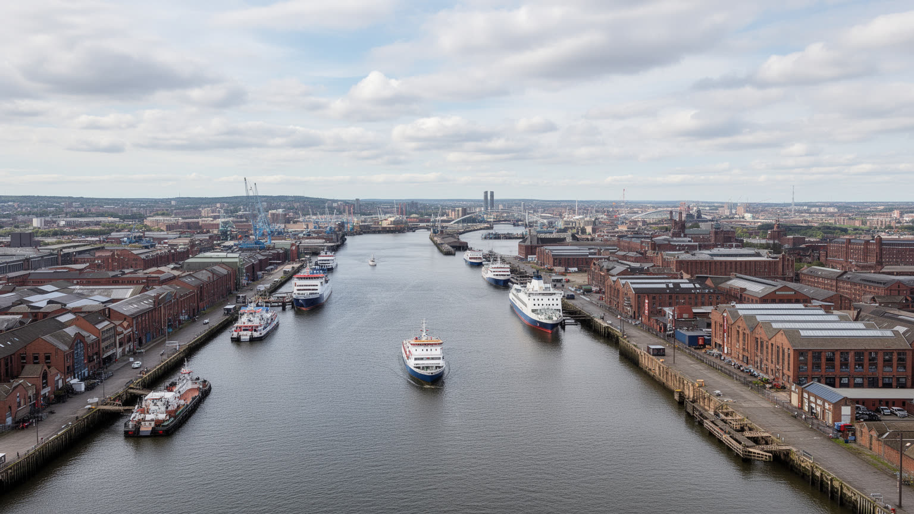
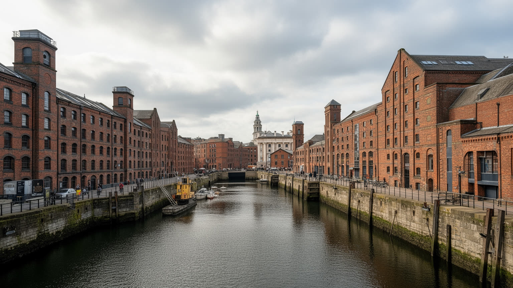
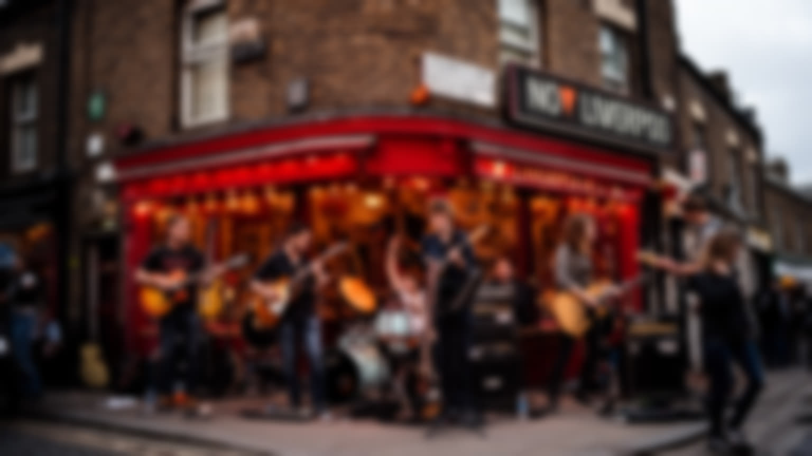
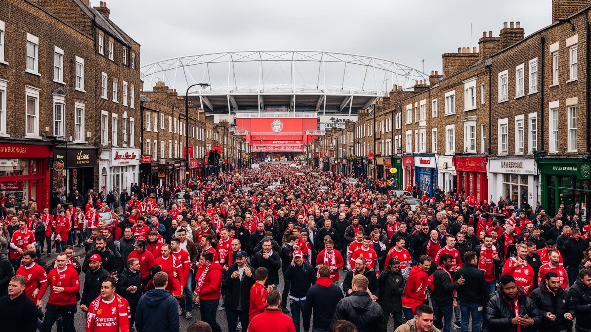
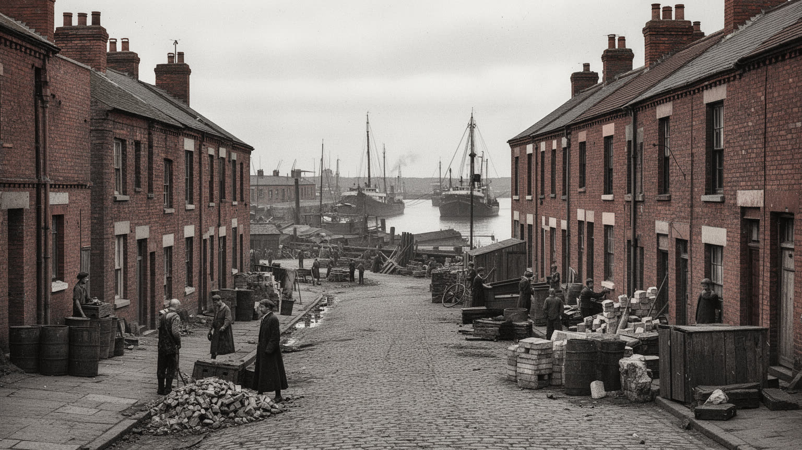
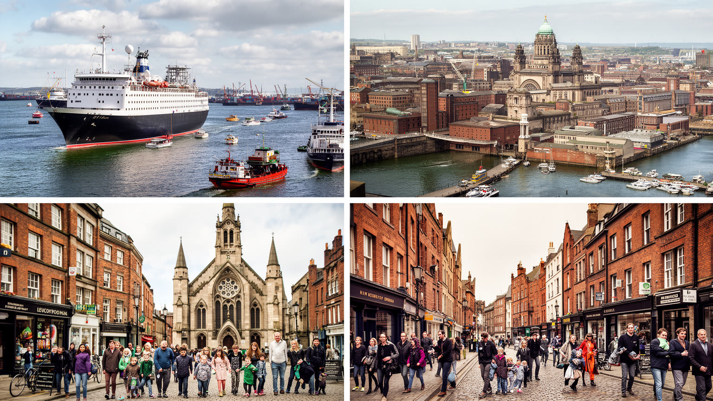
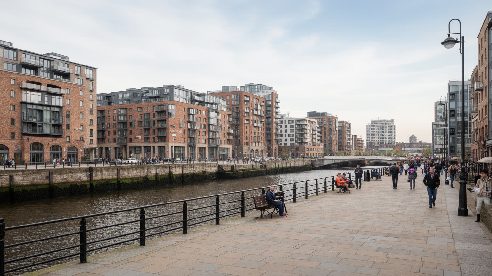
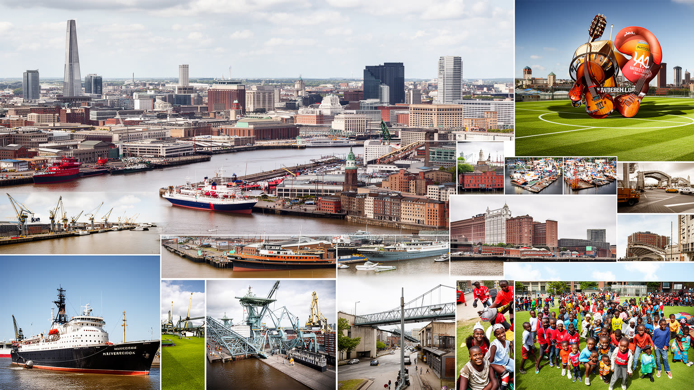

地政学
マージー川河口の港は大西洋、アイルランド海、内陸工業地帯を結びました。都市は帝国貿易、移民、戦争、造船、物流の変化を受け止め、英国北西部の玄関として今も交通と記憶を担います。欧州との距離も意識されます。

🇬🇧 イギリス / 北西イングランド / World City Atlas
港湾、移民、音楽、サッカー、再生と格差がマージー川の水辺に重なる都市。海運帝国の記憶を抱えながら、文化産業と大学、医療、観光で次の役割を探す港町です。
都市の骨格
リバプールはマージー川河口の港を中心に、倉庫、波止場、商業街、労働者住宅、大学地区、二つの大聖堂を重ねてきました。水辺の再生は華やかですが、内陸の住宅地には産業衰退の傷も残ります。

マージー川河口の港は大西洋、アイルランド海、内陸工業地帯を結びました。都市は帝国貿易、移民、戦争、造船、物流の変化を受け止め、英国北西部の玄関として今も交通と記憶を担います。欧州との距離も意識されます。
港湾、観光、大学、医療、デジタル、文化産業が柱です。一方で倉庫、配送、介護、清掃、飲食、イベント労働が都市を支え、安定した専門職と不安定なサービス職の差も目立ちます。技能訓練も今も重要な課題です。
ビートルズ、クラブ、劇場、博物館、二つの大聖堂、アイルランド系カトリックの記憶が街を形づくります。港町らしく多民族の食、礼拝、音楽が混ざり、労働者文化も誇りとして残ります。祭りも街を結びます今も。
観光客はウォーターフロント、音楽、サッカーを巡りますが、住民には住宅、健康格差、雇用、公共交通、学校、地域サービスが日々の課題です。都市再生の利益が地区へ届くかが問われます。物価上昇も重いです今。

リバプールを読む最初の手がかりは、マージー川の河口です。川幅の広い水面は観光の背景である前に、ランカシャーやマンチェスターの工業地帯を大西洋へ開いた通路でした。波止場、倉庫、税関、保険、銀行、船会社、労働組合、移民宿が港の周囲に集まり、都市の富と不安定さを同時に作りました。潮の流れ、対岸のウィラル、アイルランド海への近さは、リバプールを国内の地方都市ではなく、常に外へ向く都市にしました。コンテナ化で古いドックの役割は変わりましたが、港湾労働、フェリー、クルーズ、物流、不動産開発は今も水辺の価値を決めています。川沿いを歩くと、再生された遊歩道と博物館の裏に、海運の利益、危険な労働、戦時の被害、移民の不安が重なって見えます。港は単なる産業施設ではなく、誰が都市へ入り、誰が出て行き、何が記憶として残るかを決めた制度でもあります。現在の水辺再生を評価するには、建物の美しさだけでなく、港から離れた住宅地へ雇用や交通が届くかを見なければなりません。対岸へ渡るフェリーやトンネル、郊外鉄道、港湾道路は、観光動線とは別の生活圏を作ります。潮位、風、霧、冬の暗さも、港で働く人と川沿いに住む人の感覚を形づくります。川の存在は、観光の眺めであると同時に、仕事、通勤、記憶をつなぐ都市の軸である。フェリーやトンネルも日常の距離を変える。

リバプールの港湾遺産は、帆船や赤レンガ倉庫の懐かしさだけでは説明できません。都市は大西洋貿易の結節点として成長し、奴隷貿易、綿花、砂糖、タバコ、移民輸送、保険、金融、造船の利益を受けました。その富は商館、教会、公共建築、慈善、大学、博物館へ姿を変えましたが、同時に植民地支配と人種化された労働の記憶も抱えています。国際奴隷博物館や海事博物館は、港町の誇りを単純な成功物語にしないための重要な装置です。展示を通して、海上交通が人間の自由を奪う仕組みにもなったこと、港の繁栄が遠い地域の暴力と結びついたことが見えてきます。街路名や商人の像、旧商館の装飾にも、誰の富が公共空間を形づくったのかという問いが残ります。リバプールの魅力は、過去を隠して明るい観光地になることではなく、港が生んだ輝きと傷を同じ場所で読める点にあります。帝国の記憶を扱う態度は、現在の人種差別、移民政策、教育、博物館運営にもつながります。観光客が美しいドックを歩くとき、積み荷の名や船会社の由来を確かめるだけで、世界史の暗い線が見えてきます。都市の公共教育は、その線を避けず、子どもや訪問者が議論できる形で残す責任を持っています。過去の富を誇るだけでなく、その代償を語る場所があることが都市の信頼を支える。資料館と街路を往復すると、建物の装飾にも歴史の重さが見える。

リバプールの音楽文化は、ビートルズだけで終わりません。もちろんキャヴァーン周辺やペニー・レインは観光の核ですが、その背景には港から入ったレコード、船員の持ち帰ったリズム、アイルランド系の歌、黒人コミュニティ、労働者の社交場、クラブ、学生街があります。音楽は商品である前に、狭い住宅、厳しい仕事、週末の解放、仲間意識から生まれた日常の言語でした。現在の都市はライブハウス、フェスティバル、劇場、美術館、大学の芸術教育を観光と結びつけていますが、制作の場を守るには安い練習室、小規模会場、夜の交通、若い制作者が住める家賃が必要です。再開発で中心部が整うほど、雑多な音楽の実験場所が失われる危険もあります。リバプールの文化を読むには、世界的ブランドになったビートルズの光と、地元の若者が今も音を出す小さな部屋を同時に見る必要があります。港町の文化は外から来たものを真似るだけでなく、混ぜ、冗談にし、階級意識を含めて発信する力を持ちます。その軽さと痛みの混合が、都市の声を今も独特にしています。音楽観光が成功するほど、土産物化された過去と現在の創作が離れやすくなります。都市が次の音を生むには、名所保存だけでなく、失敗できる小さな舞台と、地域の若者が参加できる余白が欠かせません。名所を巡るだけではなく、現在の演奏場所を残すことが文化都市の条件である。

リバプールではサッカーが観光商品である前に、家族、地区、階級、記憶の言語です。リバプールFCとエバートンFCは近い距離にありながら、スタジアム、歌、色、世代の物語を通じて別々の共同体を作ってきました。試合日はホテル、パブ、交通、警備、飲食、グッズ販売を動かし、都市経済にも大きな影響を与えます。しかし、クラブの国際化とチケット価格の上昇は、地元の支持者がスタジアムへ通い続けられるかという問題も生みます。サッカーは誇りであると同時に、災害、喪失、警察やメディアへの不信、連帯の記憶を抱えています。歌声や黙祷、横断幕は、スポーツの枠を超えて都市が自分自身を語る場になります。新しいスタジアム開発や周辺再生は雇用と投資を呼びますが、地元商店、住宅、交通、公共空間への影響も慎重に見なければなりません。リバプールのサッカー文化を読むことは、勝敗や名選手を追うだけでなく、クラブが誰の居場所であり続けるのかを問うことです。世界中のファンを受け入れながら、地元の声が消えないことが、この都市のサッカーを公共文化にしています。スタジアム周辺の小さな店、試合後のバス停、家族で受け継ぐ席の記憶は、テレビ中継には映りにくい都市の資産です。商業化が進むほど、こうした日常の応援文化を守る政策も必要になります。クラブは観光資源である前に、地区の記憶と日常会話をつなぐ公共文化である。

リバプールの都市像には、労働者階級の自尊心が強く刻まれています。港湾労働、造船、倉庫、鉄道、工場、清掃、公共サービスは、家族の生活だけでなく、冗談、音楽、サッカー、政治意識、相互扶助を育てました。産業衰退と失業は単に仕事を失わせただけでなく、地区の誇り、若者の進路、店の賑わい、公共住宅の維持、健康状態に影響しました。英国の中心から遠い北西部の都市として、政府への不信や「自分たちは見捨てられた」という感覚も形成されました。一方で、その経験は連帯、寄付、地域活動、労働運動、文化表現の力にもなっています。観光客が水辺の美しい建築を見るとき、その背後には早朝の荷役、厳しい天候、危険な作業、ストライキ、家計を支えた女性の労働があります。現在のリバプールはサービス業と知識産業を伸ばしていますが、労働者階級の記憶を飾りにしてしまえば都市の核心を失います。必要なのは、過去を懐かしむことではなく、安定した雇用、技能訓練、交通、住宅、公共サービスとして尊厳を現在へつなぐことです。地域のパブ、クラブ、教会、学校、スポーツ施設は、失業の時期にも人を孤立させない役割を担ってきました。新しい経済が育つほど、そうした日常の支えを古いものとして切り捨てない判断が重要になります。新しい産業が伸びる時ほど、地域の尊厳を支えた場所を守る必要がある。

リバプールは英国の中でもアイルランドとの距離が近い都市です。飢饉、仕事、家族、信仰、船便によって多くの人が海を渡り、カトリック教会、学校、パブ、葬儀、祭り、政治意識の中にアイルランド系の記憶を残しました。このつながりは単純な郷愁ではなく、貧困、差別、労働市場、宗派意識、家族ネットワークと結びついています。さらに港町にはウェールズ、カリブ、アフリカ、中国、南アジア、中東、東欧からの人々も入り、食、宗教、言語、商店街、結婚、音楽を通じて都市を作り替えました。リバプールの多文化性は、華やかなフェスティバルだけでなく、移民がどの仕事に就き、どの地区に住み、学校や病院でどんな支援を受けられるかに表れます。船着き場は希望の入口であり、別れの場所でもありました。移民の歴史を読むことは、都市の開放性を祝うだけでなく、差別や貧困、言語の壁を見落とさないことです。港が開いた世界性は、現在のリバプールでも礼拝所、食堂、家族の姓、音楽の混ざり方として残り、都市の親密な国際性を支えています。家族史は公式の記念碑よりも、墓地、学校名、料理、アクセント、週末の集まりに残ります。移民の記憶を丁寧に扱うことは、港町が誰を市民として迎えてきたかを見直す作業でもあります。海を越えた家族の記憶は、都市の国際性を身近な生活の中に残している。

リバプールのウォーターフロント再生は、都市のイメージを大きく変えました。アルバート・ドック周辺の倉庫は博物館、飲食、ホテル、住宅、イベント空間となり、ピア・ヘッドの三美神と現代建築は観光写真の中心になっています。欧州文化首都以降、都市は音楽、アート、クルーズ、会議、大学、創造産業を前面に出し、外からの投資と訪問者を呼び込みました。しかし、再生の成功は水辺だけで測れません。中心部が明るくなる一方で、北部や東部の住宅地、低所得世帯、若者、健康状態の悪い地区に利益が届かなければ、都市の分断は深まります。再開発は公共空間を広げることもできますが、家賃上昇、短期滞在、地元商店の入れ替わり、単調な高層住宅を招くこともあります。リバプールを評価するには、景観の更新と生活の更新を分けて考える必要があります。新しい水辺が誇りを生むのは、観光客のための舞台で終わらず、住民が働き、学び、休み、川に近づける場所になるときです。再生は建物の改修ではなく、都市の富をどこへ流すかという政治です。公共交通、歩道、学校、保健、職業訓練が水辺の投資と結びつくほど、再開発は都市全体の資産になります。逆に、写真映えする場所だけが増えれば、日常の困難は見えにくくなるだけです。水辺の価値が住宅地へ流れる設計があって初めて、再生は都市全体のものになる。
リバプールの社会問題を考えるうえで、健康格差は避けられません。港湾と工業の衰退、失業、低所得、住宅の質、教育機会、依存症、精神的ストレス、食環境、公共サービスの削減は、地区ごとの寿命や病気の発生に影響します。水辺の再生や観光の成長が目立つほど、健康状態の悪い地域との距離は見えにくくなります。医療機関と大学病院、研究施設、地域保健サービスは重要ですが、病院だけで格差は解けません。暖かく安全な住宅、歩ける街路、公園、安い交通、安定した仕事、孤立しないコミュニティ、子どもの栄養、依存症支援が必要です。都市の健康は、救急車の数ではなく、病気になる前の生活条件で決まります。リバプールには強い地域連帯と慈善、教会、フードバンク、スポーツクラブ、市民団体がありますが、それらに負担を押しつけるだけでは限界があります。健康格差を読むことは、都市再生の成果が誰の体に届いているのかを問うことです。観光収入や大学の研究が地域の福祉、住まい、雇用へ結びつくかどうかが、港町の未来を左右します。寒い住宅や不安定な食生活は、統計表では小さく見えても、通学、通勤、介護、医療費に毎日影響します。健康を都市政策の中心に置けば、再生の優先順位も水辺の景観から生活基盤へ広がります。都市の魅力を語る時にも、寿命や子どもの貧困を同じ地図で考える必要がある。
リバプールは港湾都市であると同時に、大学都市でもあります。大学、病院、研究所、芸術学校、学生住宅、図書館、スタートアップ支援は、産業衰退後の都市に新しい雇用と人口をもたらしました。医学、熱帯医学、海洋、材料、デジタル、音楽、建築、社会科学などの知識は、地域経済だけでなく国際ネットワークとも結びつきます。学生は中心部の店や夜間経済を支え、卒業生は文化産業や医療、教育、行政に残ることもあります。一方で、学生住宅の集中は家賃、騒音、地域商業、住民構成を変え、大学の成長が周辺地区の生活と摩擦を起こすこともあります。知識産業の発展を都市全体の力にするには、研究施設だけでなく、地元の若者が大学へ進み、技能を得て、安定した職へつながる経路が必要です。リバプールの大学は世界へ開く窓であると同時に、地域の不平等を縮める公共機関であるべきです。研究成果が病院、学校、企業、市民活動に届くほど、知識は都市の飾りではなく生活の基盤になります。学生都市としての活気を、住民の暮らしと対立させず共有財産にできるかが問われます。図書館、公開講座、実習先、地域診療、起業支援が開かれていれば、大学はキャンパスの外でも都市を支えます。若者を呼び込むだけでなく、地元出身者が残れる職場を増やすことが重要です。地元の若者が学び直し、働き続けられる経路があってこそ知識都市になる。

リバプールは、世界都市という言葉を金融や超高層ビルだけで考えることの限界を教えてくれます。人口規模やGDPだけならロンドンほど大きくありませんが、港湾、帝国、奴隷貿易、移民、音楽、サッカー、労働者文化、健康格差、都市再生がこれほど濃く重なる都市は多くありません。マージー川の水辺には、世界へ開いた誇りと、収奪や貧困を隠せない記憶があります。観光客はビートルズ、ドック、スタジアムを楽しめますが、都市を深く読むなら、内陸の住宅地、公共サービス、学生街、教会、フードバンク、夜の労働、古い商店街も歩く必要があります。リバプールの魅力は、傷を消して洗練された港湾都市になることではなく、傷を抱えたまま冗談、音楽、連帯、誇りに変える力にあります。再生が本物になるのは、ウォーターフロントの価値が健康、住宅、教育、交通、安定した雇用へ届くときです。港町の歴史は外へ向かう力を与えましたが、未来の評価は内側の生活をどれだけ支えられるかで決まります。リバプールを読むことは、都市の栄光と不平等を同じ地図に置くことです。海の向こうへ開いた都市だからこそ、外からの視線に応えるだけでなく、地元の子ども、高齢者、移民、労働者が自分の街だと思える条件を守る必要があります。そこに、この港町の次の世界性があります。明るい観光と重い記憶を分けずに歩くほど、この街の立体感が見えてくる。